Префектура Окинава · остров Такэтоми · гостиница
HOSHINOYA Taketomi Island: пожить островитянином в деревне из красной черепицы
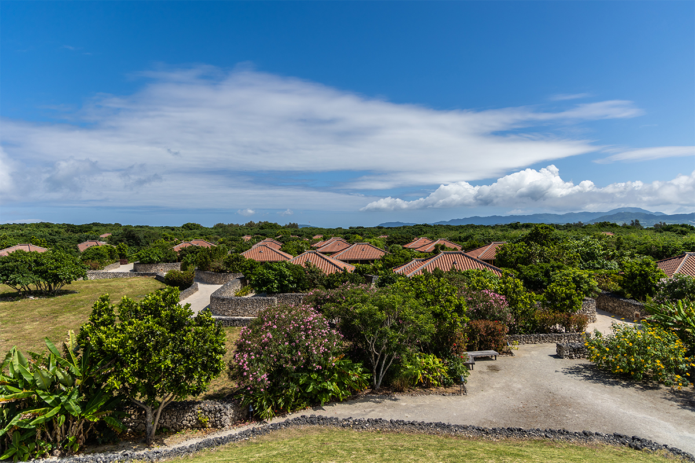
Такэтоми, маленький остров Яэямы в пятнадцати минутах на пароме от Исигаки, бережёт старую деревню с красной черепицей и белым песком на улицах. HOSHINOYA Taketomi Island построили по тем же правилам, и гость здесь живёт почти как местный житель.
Деревня
Четвёртая деревня острова
От порта Исигаки до Такэтоми паром идёт около 15 минут, а в порту гостей уже ждёт машина гостиницы. На острове три старые деревни, и HOSHINOYA Taketomi Island открылась в 2012 году как своего рода четвёртая. На участке около 66 000 квадратных метров стоят 48 отдельных домов, и все они построены по традиционным строительным правилам острова. У входа растёт дерево сунмася, которое в деревнях Такэтоми отмечает въезд и отгоняет злых духов.
Острова Яэяма называют «аллеей тайфунов», поэтому каменные ограды и крыши здесь устроены так, чтобы пропускать сильный ветер. Эту «архитектуру выживания» гостиница повторяет целиком. На крышах сидят сиса с талисманами, связанными с историей острова: их стоит разглядеть.
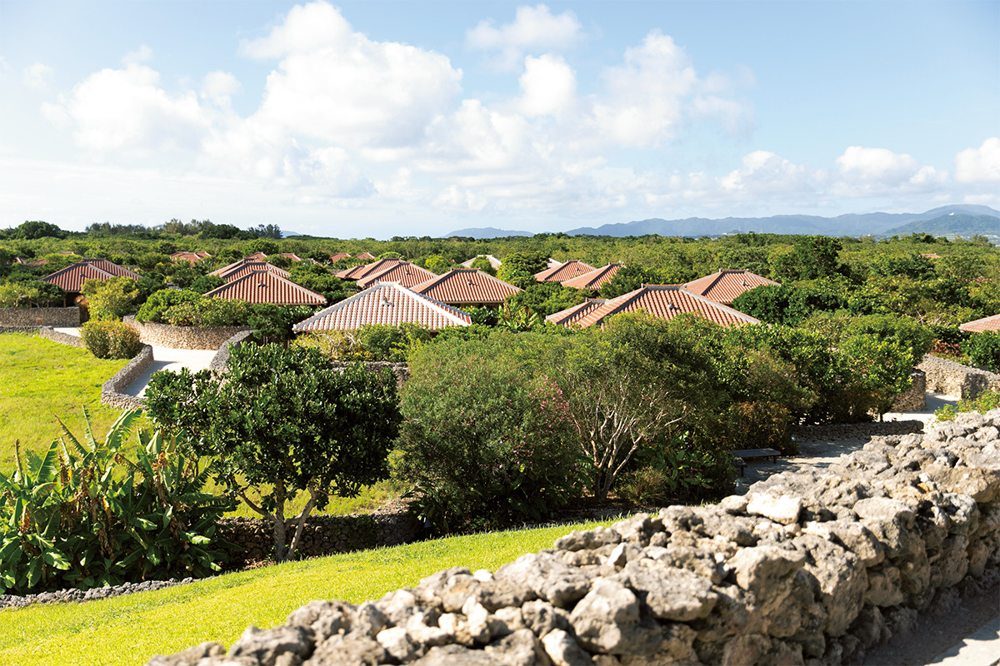
Белые песчаные дорожки каждое утро подметают, и на песке остаются ровные следы метлы. Ограды из рюкюского известняка здесь называют гукку. Ради уединения их сделали чуть выше обычного, а белый поначалу камень за десять лет потемнел и стал выглядеть по-настоящему старым.
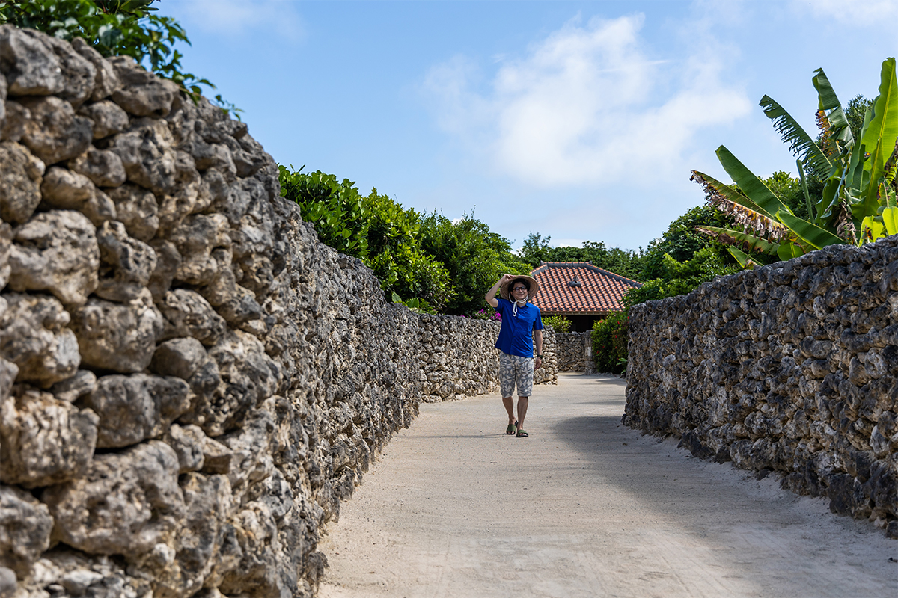
Все дома, как и в деревнях острова, смотрят на юг. Растения в саду у каждого номера свои, и среди одинаковых домов по ним легко найти дорогу. Под навесом висит кресло-гамак, и к нему иногда подходят белогрудые погоныши и другие птицы.
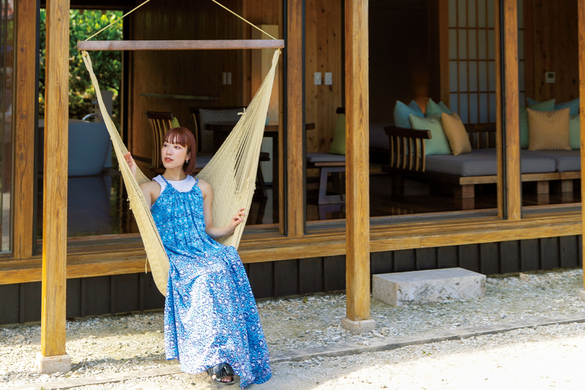
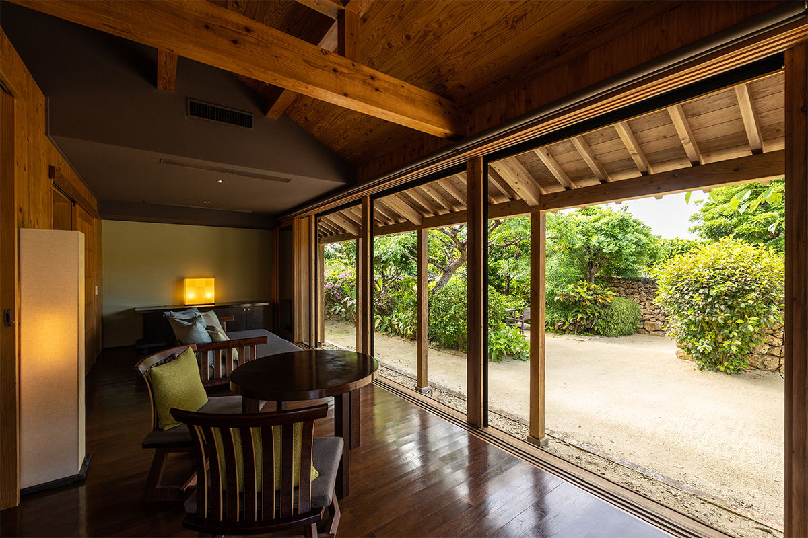
Поэт, который пишет танка, впервые приехал на Такэтоми больше десяти лет назад и с тех пор возвращался не раз. Синее небо, красная черепица, ослепительно белые дорожки: остров, по его словам, показался ему «похожим на рай».
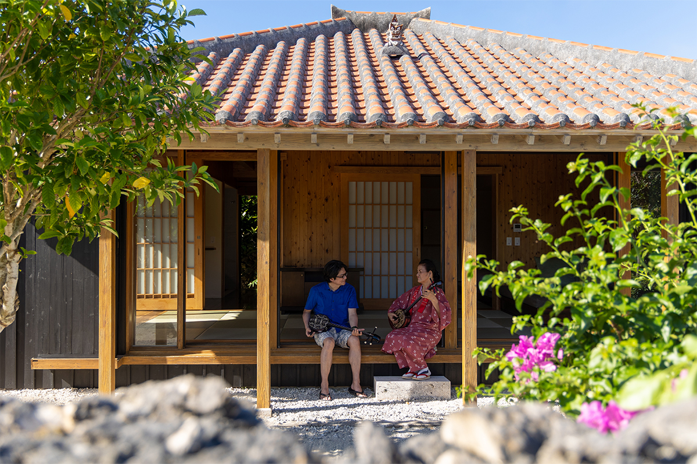
Бассейн выкопан в форме чаши и открыт круглые сутки. Он глубокий и просторный, в нём можно плавать всерьёз или просто сидеть на краю, опустив ноги в воду.
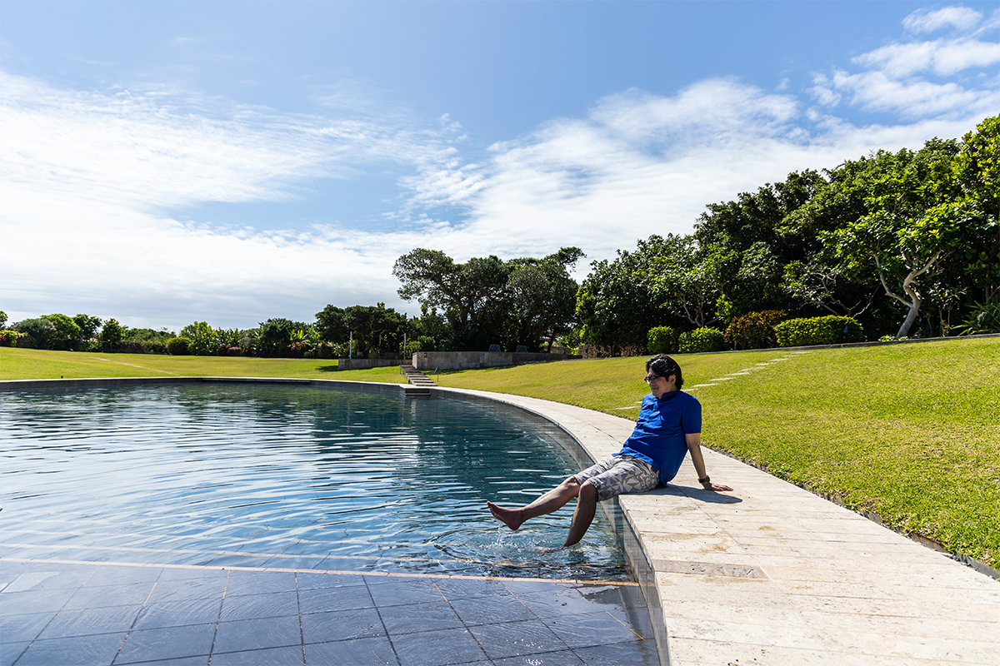
Номер
Дом, где дует пайкадзи
Танцовщица и хореограф, для которой эта поездка стала первой в жизни поездкой на остров, вспоминала первое впечатление как «тихое волнение, от которого перехватывает дыхание». Первым делом она распахнула стеклянные двери. В доме открываются окна с севера и юга, и сквозь комнату идёт южный ветер, на местном языке пайкадзи. Даже в полдень кондиционер не нужен.
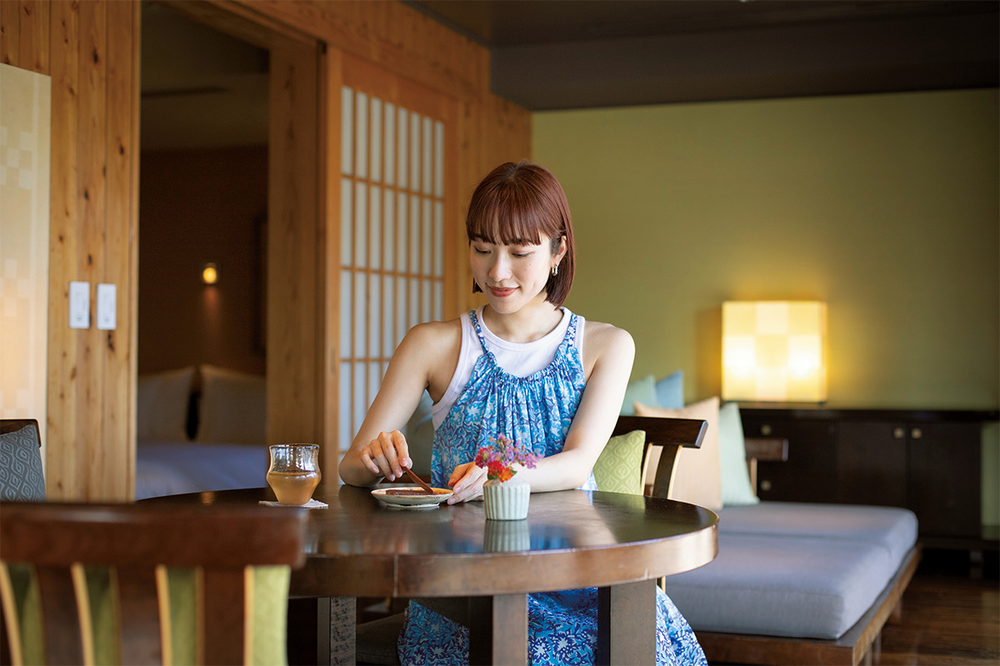
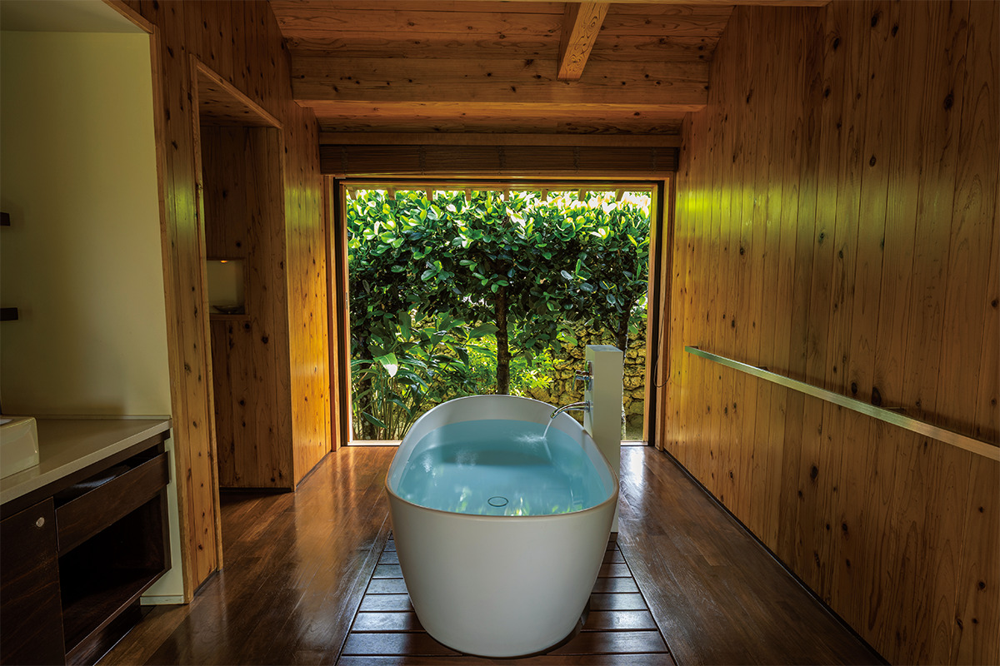
Поначалу, призналась она, было непонятно, чем заняться в такой непривычной жизни. Но, когда она легла на диван и стала смотреть на улицу, появилось чувство, будто пришла к кому-то в гости.
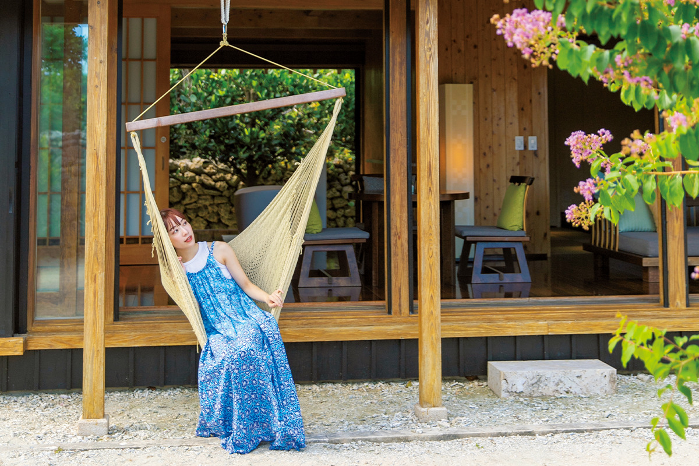
Ужин
Яэяма во французской технике
Ресторан гостиницы соединяет кухню Яэямы, где еда издавна считается лекарством, с французской техникой. В 2022 году ужин назывался «Рюкю нувель», летом 2023 года «Островной терруар»: курс из восьми блюд из сезонных продуктов, с креветками-курума, которыми славится Такэтоми, и очень сладкими ананасами, которые почти не щиплют язык: их здесь выращивают с особой заботой. Летний курс стоил 14 520 иен с налогом и сервисным сбором в 2023 году, бронь до предыдущего дня на официальном сайте.
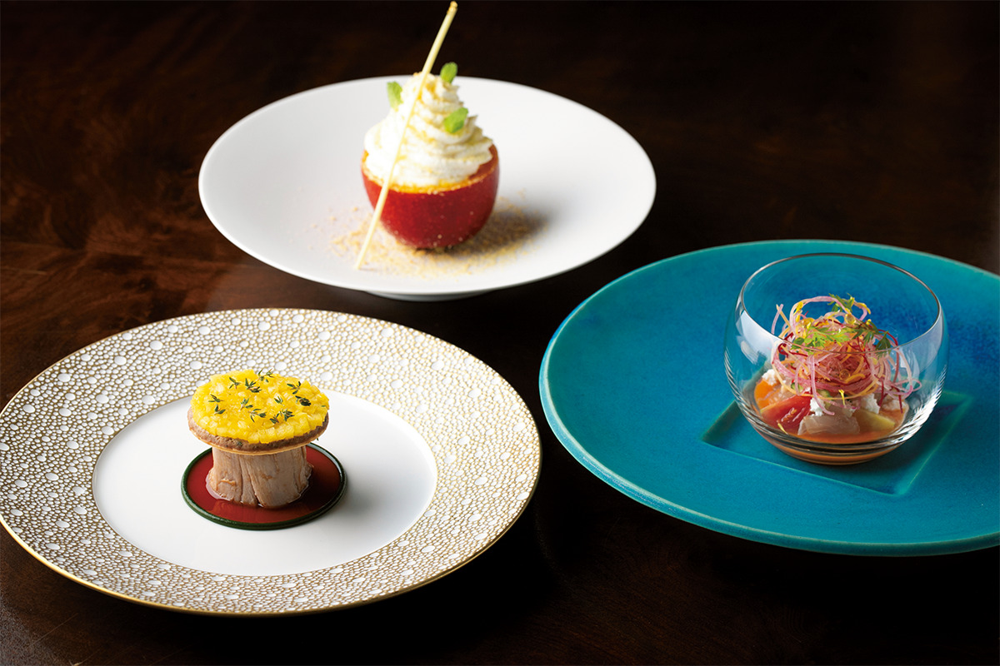
Свинина в этом курсе напоминает об окинавской поговорке, что у свиньи едят всё, кроме хрюканья. Свиней «Пайну» откармливают ананасом, мясо легко усваивается и хорошо идёт летом, когда пропадает аппетит. Манго созревает в июле, и его подают целиком: под пеной прячутся пюре, мороженое и бисквит, и торт складывается уже во рту. Начинается ужин с акамати, одной из трёх самых дорогих рыб Окинавы. Её маринуют в местном мисо «Яйма» с авамори и добавляют пюре из тофуё, островного ферментированного тофу.
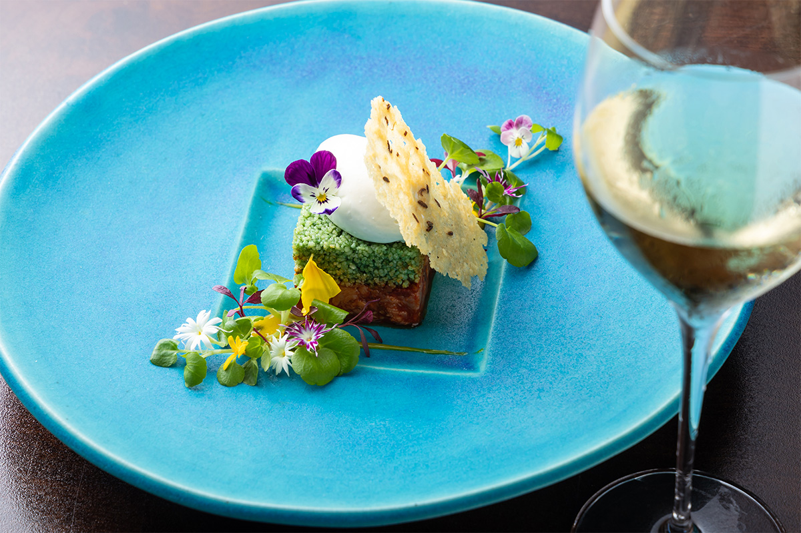
Утро
Пляж Кондой до первого парома
Летом 2023 года гостиница предлагала утреннюю программу «Уми ну кукурумути», что значит «ощущение моря». В 6:15 гостей отвозят к деревне в двух километрах от пляжа Кондой, а дальше идут пешком. Первый паром с Исигаки ещё не пришёл, и остров живёт своей тихой жизнью: на улицах только что подметённый белый песок, у домов цветы, вокруг голоса птиц.
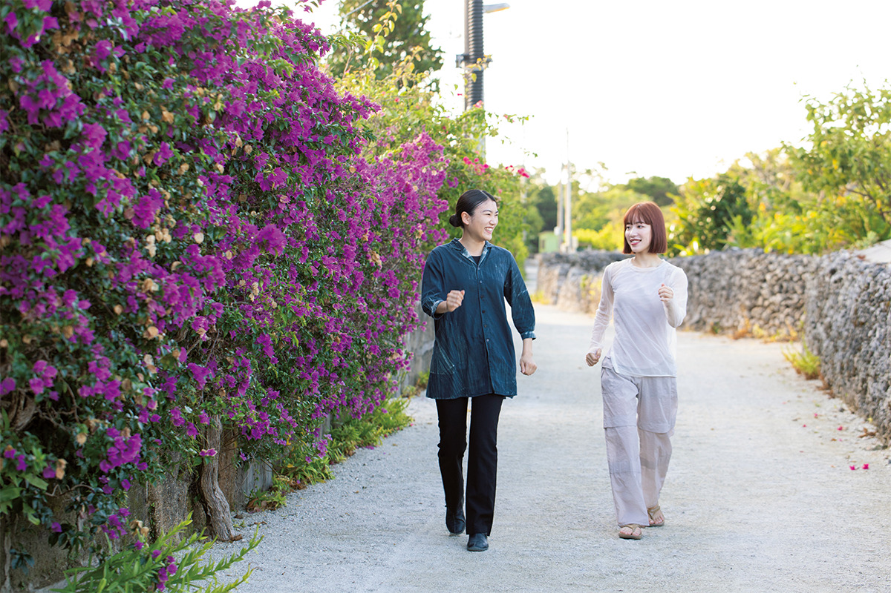
Пляж Кондой лежит на западе острова, а воду здесь называют «синевой Такэтоми». После прогулки хочется скорее лечь на воду. На мелководье танцовщица закрыла глаза и сразу поймала состояние невесомости: «С закрытыми глазами вдруг чувствуешь, какое море широкое и глубокое».
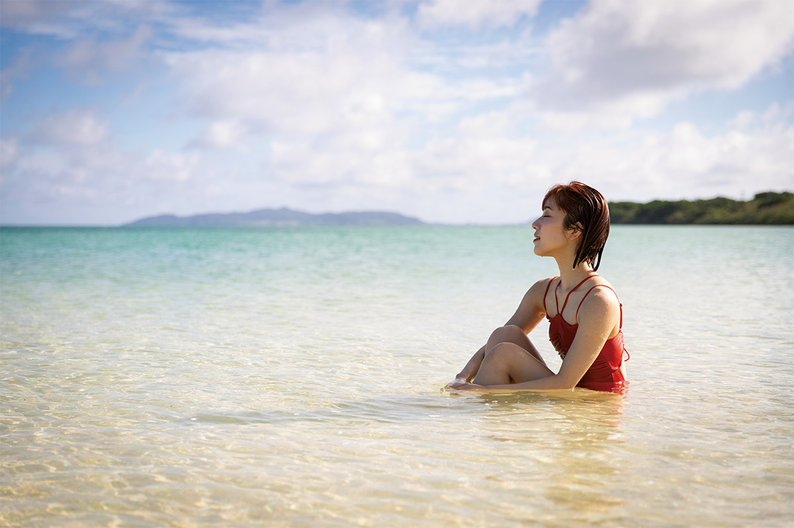
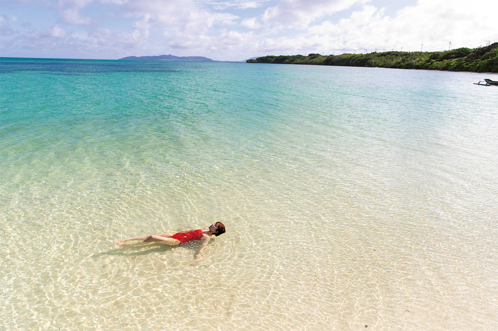
Завтракают прямо на пляже. На островах принято с утра есть плотно и то, что даёт силы, поэтому подают два вида сэндвичей и южные фрукты по сезону. К ним горячий чай из нутигуса, «трав жизни», с добавлением гэтто и других растений. Таких трав на острове, говорят, около 54, и долгое время, пока на Такэтоми не было врачей, именно они берегли здоровье жителей.
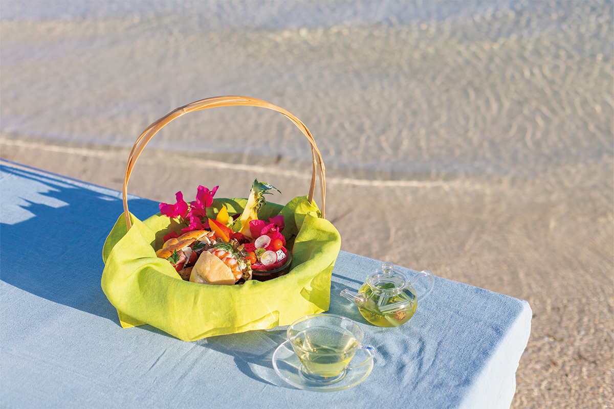
«Сначала у меня был размытый образ южного острова. Но когда мне рассказали о нём, я стала по-другому смотреть вокруг и понемногу почувствовала, что такое именно Такэтоми»
танцовщица и хореограф
Потом спа: из трёх ароматических масел она выбрала свежий, бодрящий аромат и под южный ветер с запахом масел крепко уснула.
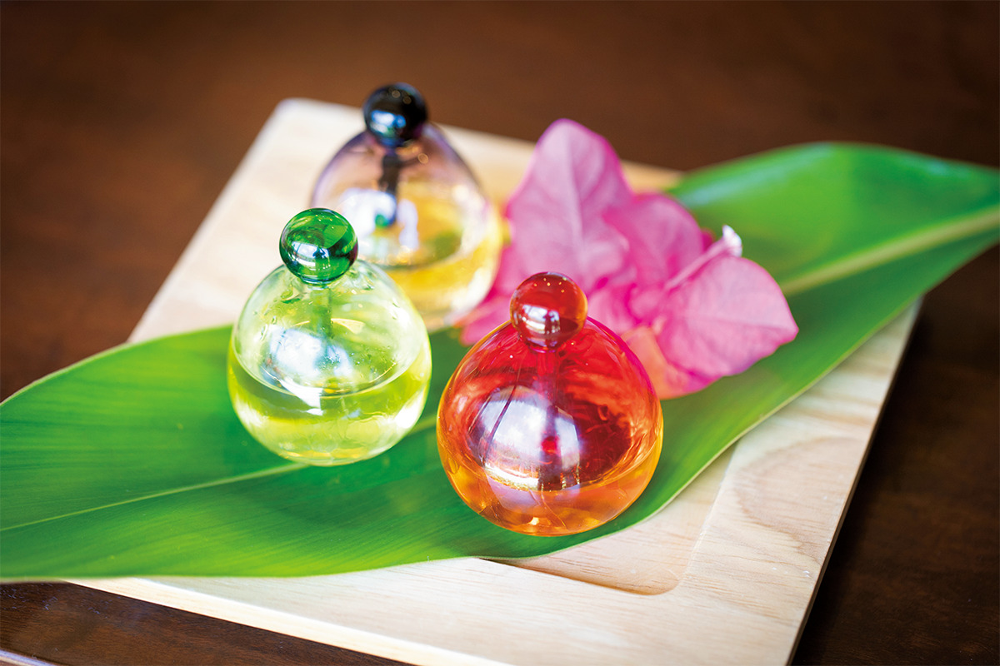
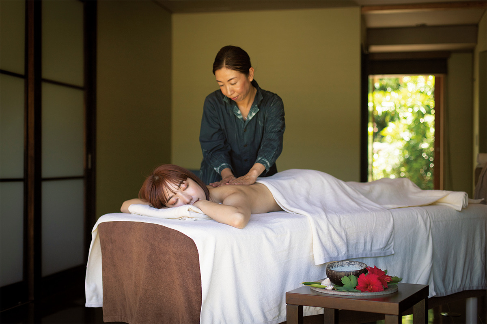
Днём танцовщица сочинила танец о море, небе и ветре острова. В Токио ей приходилось специально искать зелёные парки, чтобы работать, а здесь такого места, по её словам, хоть отбавляй.
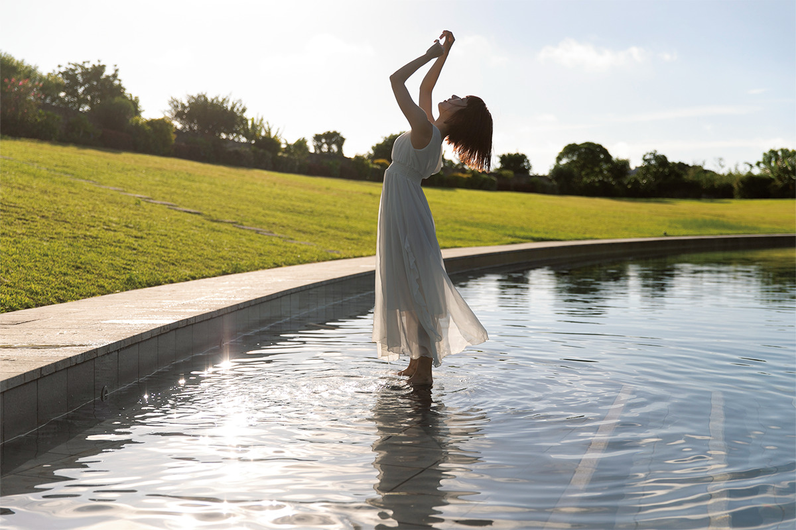
«На Такэтоми мой танец наконец совпал с пространством»
танцовщица и хореограф
Программа «Уми ну кукурумути» шла до 30 сентября 2023 года, для одного гостя в день, и стоила 30 250 иен с налогом и сервисным сбором в 2023 году. В неё входили прокат поплавка, завтрак, травяной чай и спа.
Море и поле
Сабани, огород и просо
Летом 2022 года гостиница проводила программу «Уми но кафу». Кафу на языке острова значит «счастье», и вся программа была о том, как жители веками жили морем. Гости надевают обувь для воды и идут по пляжу и скалам вместе с местным рыбаком, который родился и вырос на Такэтоми. Он показывает адан, плод которого похож на ананас, а из листьев плетут корзины, и объясняет, почему море здесь такое чистое: рек, которые несли бы муть, на острове нет, а воду фильтруют трепанги.
В ту программу входило и тофу: его делали из соевых бобов, среди которых местный сорт «кумомами» с острова Кохама, и воды подводного источника. Из той же воды выпаривают соль, богатую минералами.
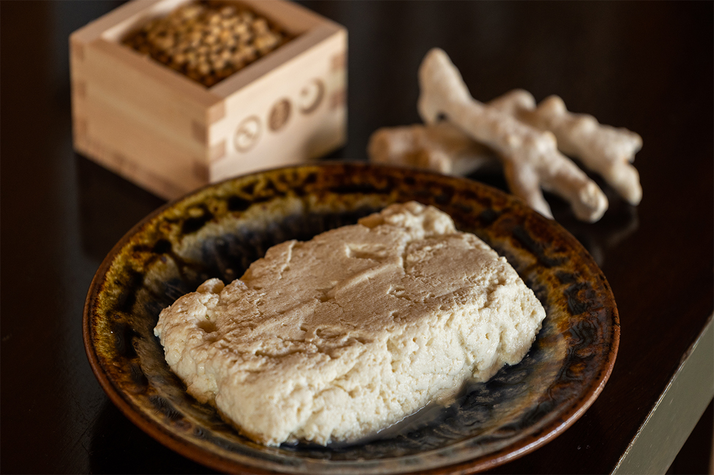
Гуляя по территории, легко заметить зелёные грядки. Огород завели осенью 2017 года, и в нём растят традиционные культуры острова. Если осторожно копнуть землю лопаткой пира, покажутся островной чеснок пин и островной лук даккё. Поэт вместе с садовником гостиницы выкопал батат и долго рассматривал крупный клубень.
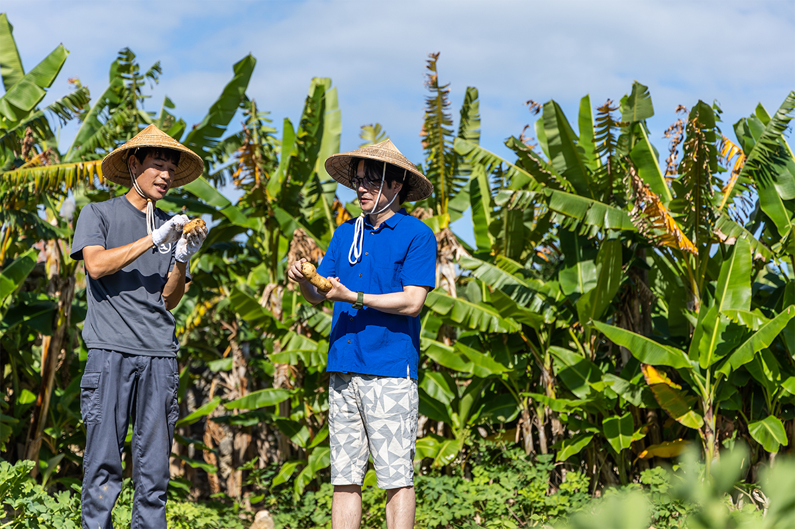
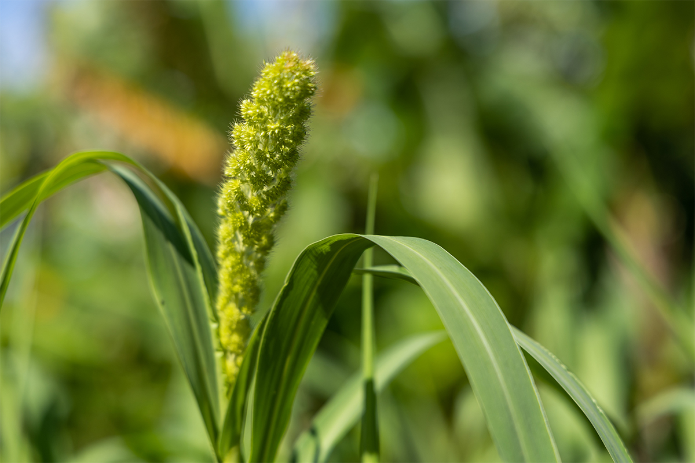
Традиции
Сансин, травы и звёзды
Такэтоми называют ещё и островом песен и танцев. В гостинице можно пригласить в номер опытную исполнительницу и взять урок игры на сансине. Поэт слушал «Асадоя юнта», народную песню, которая родилась на Такэтоми, и подпевал припев «Саа юи-юи», а в открытые окна дул южный ветер.
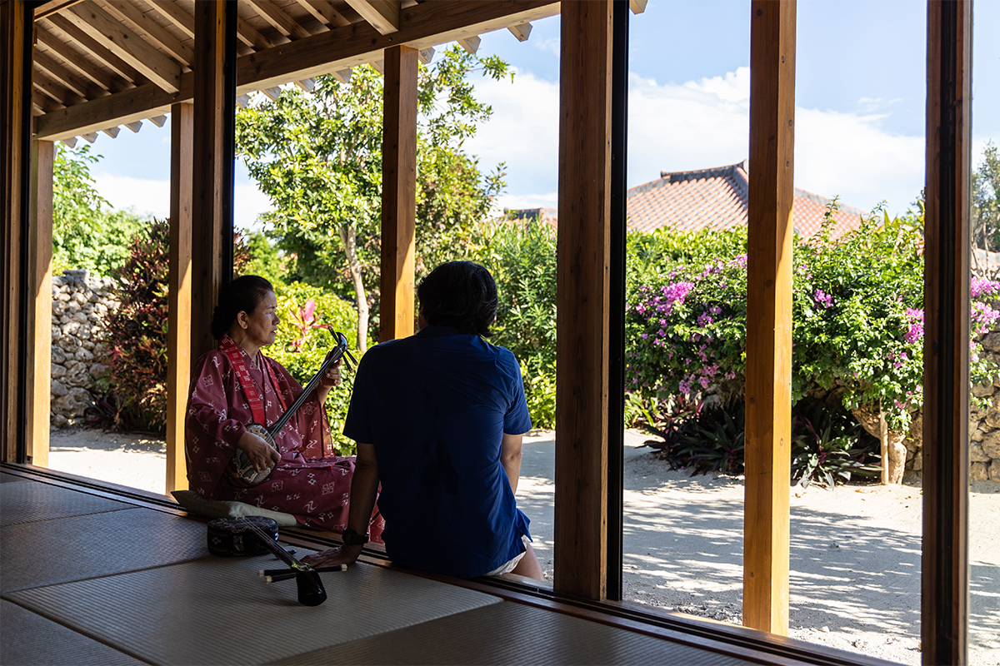
Гостиница старается вместе с жителями передавать историю и традиции острова дальше. Мастерицы из местного кружка «Кудзи-но кай», который хранит ремёсла, за неторопливой беседой, юнтаку, учат плести подставки из листьев гэтто.
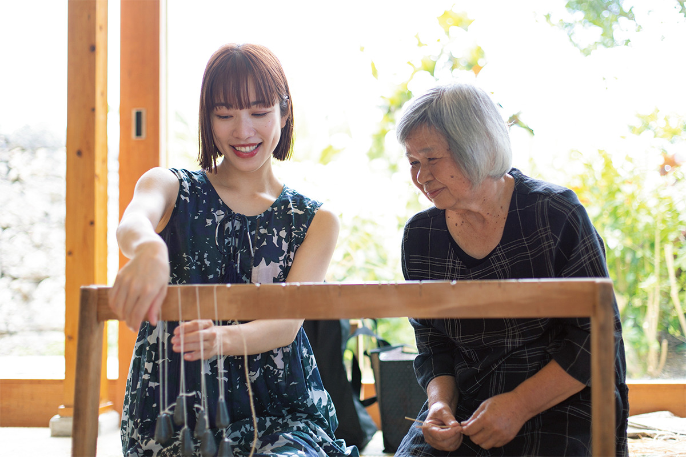
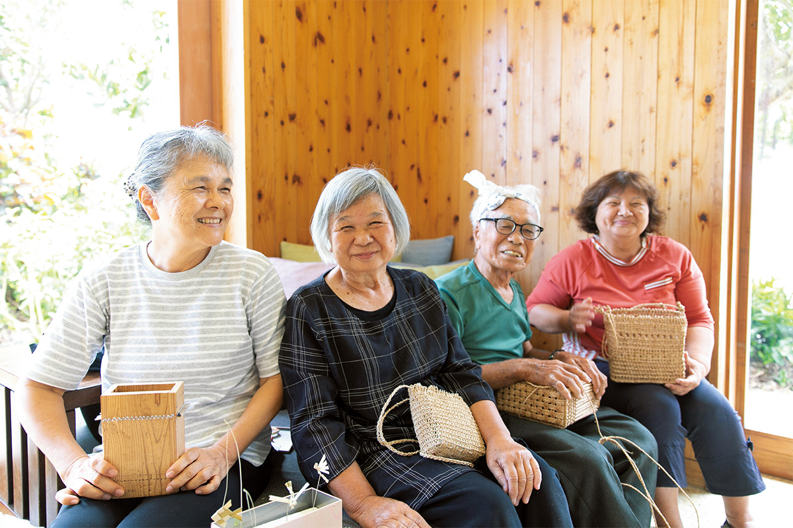
Соль для ванны делают из трав жизни: сначала нюхают растущие на территории травы и сами срывают те, что понравились. Занятие в 2023 году было бесплатным и проходило по понедельникам и четвергам в 10:30 и 11:30 в лаунже «Юнтаку».
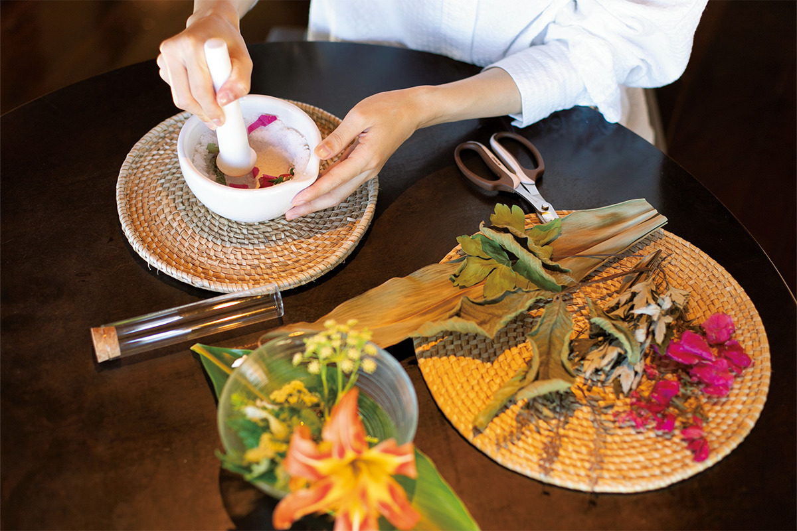
Каждый вечер с 21:15 до 21:45 у бассейна бесплатно учат глубокому дыханию и растяжке под звёздами, когда видна даже полоса Млечного Пути. После занятия можно лечь на траву и ждать падающую звезду. В последнее утро поэт встал пораньше и на рассвете делал на пляже дыхательную гимнастику.
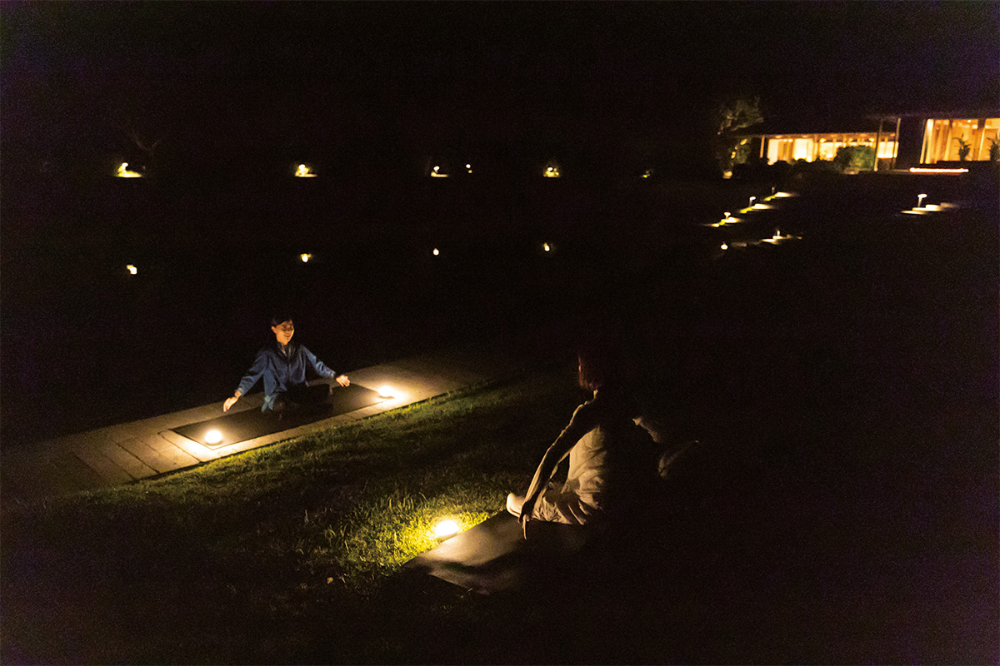
«Если каждое утро делать здесь зарядку, можно, пожалуй, дожить до ста лет»
поэт
HOSHINOYA Taketomi Island
- Адрес
- префектура Окинава, уезд Яэяма, Такэтоми, Такэтоми
- Телефон
- +81 50-3134-8091 (общая служба бронирования HOSHINOYA)
- Номера
- 48 отдельных домов
- Цены / Вход
- от 112 000 иен за номер за ночь с налогом и сервисным сбором, без питания (2023 год), бронь от двух ночей
- Заезд / выезд
- 15:00 / 12:00
- Как добраться
- паром от порта Исигаки около 15 минут, от порта Такэтоми трансфер гостиницы
- Сайт
- hoshinoya.com
Фото: Ямато Нонака, Садахо Найто.